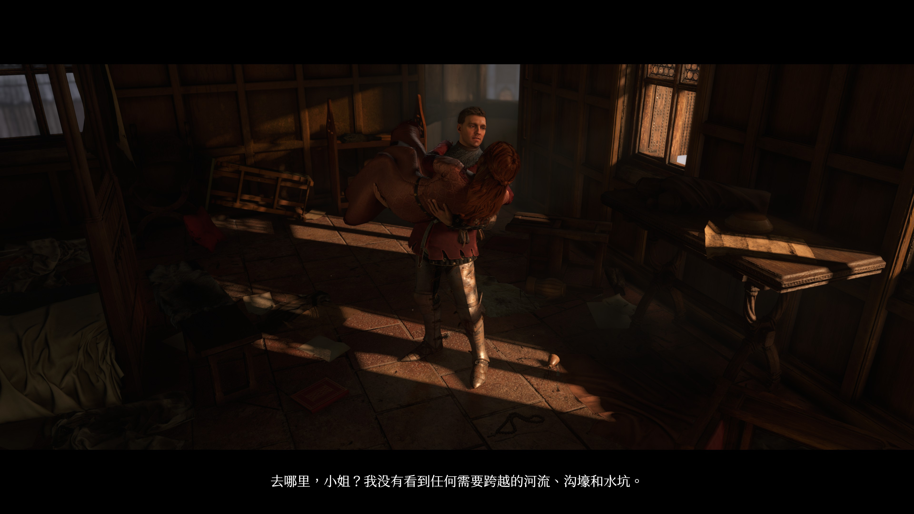
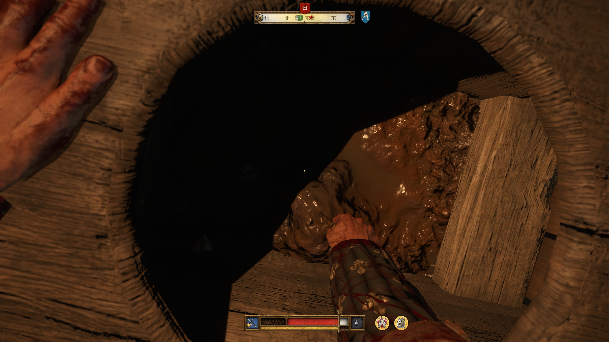
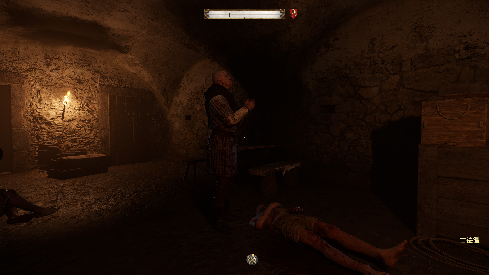
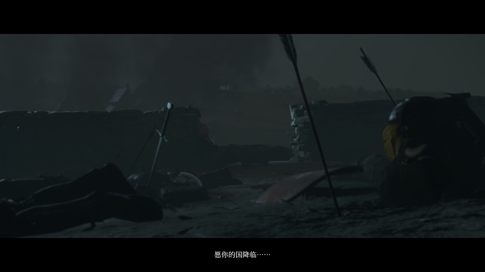
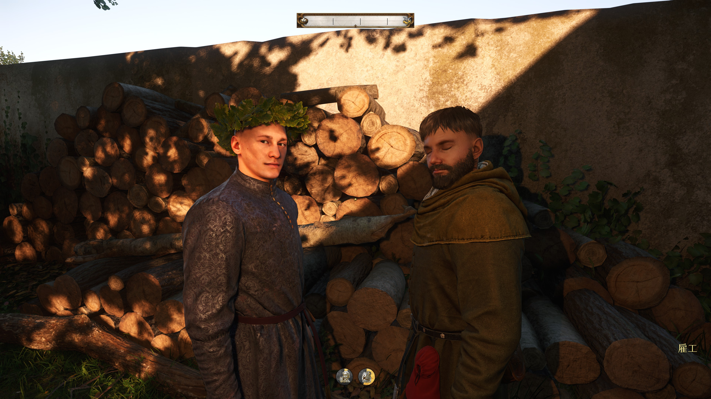
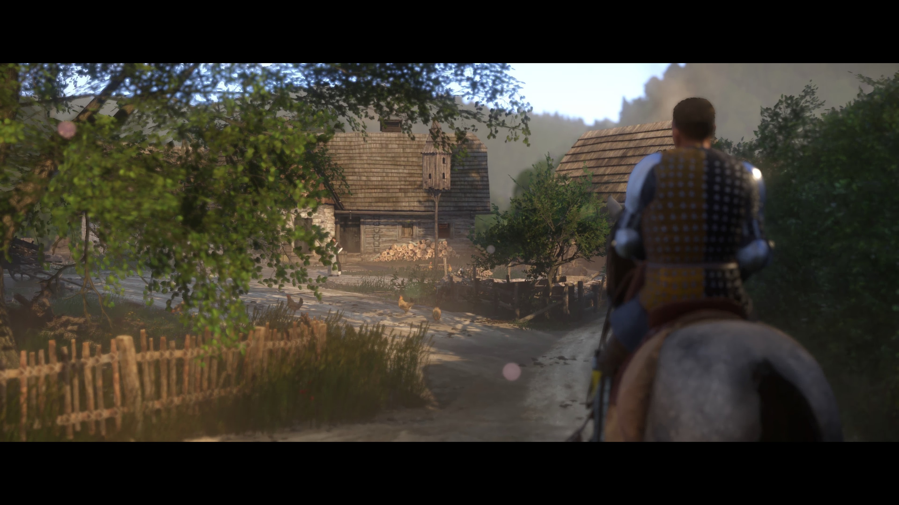

迷失在波西米亚-天国拯救
天国拯救2
春节期间入坑了天国拯救2 去年常听说社区没输过，拿奖没赢过
初期入戏还是需要一定的时间，毕竟我既没有玩过前作，也不了解波西米亚。 对这块地区的唯一印象只有钢丝里面吃了捷克放附庸。
开场的守城战说实话开始没太玩明白，平淡的启程直到少主从Audentes Fortuna Iuvat 变成 female！结果本以为是主角团的人被屠戮殆尽。
整个游戏的支线大抵都是手工打磨，通马桶不说没有，至少占比不高，倒是有大批量的支线带我认识形形色色的人，或是像博珍娜的抉择让我梦回巫师3。
玩的时候还不知道特丽莎是谁，整条主线里面最喜欢的就是罗莎了，智慧、勇敢，人设几乎完美。

游戏里的景观真实无比还原了，特别是马路上的屎尿，以及马桶。

对兵击毫无了解的我看到战斗动作要上下左右，寻思着动作就四个方向应付的过来，还有提示什么时候该打什么时候该防。然后就叮叮当当和路边强盗无限回合制。 打拳意外的简单许多，总感觉直接猛攻能干翻绝大多数拳赛对手。
主线适合一气呵成的玩，和支线交叉着做总感觉会被打乱出戏，不过开放世界的架构总是难以避免这种问题。
开局就能接到两个大型任务，铁匠和磨坊主。铁匠的快一些，和老塞米剿匪还是挺有意思的，不过我一周目的时候在特罗斯科维茨拿流动红旗了，到那里就被拦了，然后老塞米和格纳利就得胜归来，我任务失败了，虽然也不影响后续。 磨坊主的线到是长很多，还能拿到一套不错的潜行衣，最主要的是你会发现这磨坊主还是个有理想的家伙，甚至是知识分子。
图1的主线里最喜欢的大概是绝境丧钟，有经验的自然知道12声钟声足够你救出少主，我二周目的时候直接打晕抄写员，拿上药就找队长了，可是一周目的时候时不我待却不知道怎么拯救的氛围感却格外真实，以至于我后来总想要一个没玩过天国拯救2的脑子。

图2的主线令我印象最深的就是阿德尔死前的祈祷了，愿你的国降临，隆隆的BGM下这也没少做恶的佣兵向上帝祈祷，竟也充满电影质感的显露了一丝神性。

二周目的时候开了困难加全负面。 刚玩十分钟我就决定这周目速通少做支线。 因为找不到路太痛苦了。 打开地图却看不到自己在哪的时候，我才意识到其实看地图最重要的就是在荒郊野外定位自己。 才意识到现代科技打开手机看到的自己所在那个标识竟然是那么便利。
这还是建立在游戏地图是准确、正确的情况下 真实的中世纪，怕是进了陌生的地方，就真的再也出不来了。
已经知道剧情以后再去玩，大概就会去找那些一周目没注意到的东西了 比如婚礼前的两个活宝

没有守身如玉导致错过的特丽莎

天国拯救
玩完2代再回过头来入坑一代。 上来就看到老马丁不希望亨利学剑术，而是希望他平稳的当个铁匠度过一生 不知道的还以为是来了中国，看来全天下的父母都不希望自己的孩子去冒险，而是希望他们能过个安稳的日子。所以热血冒险漫中总是没有父母的身影，冒险的反义词是妈妈。